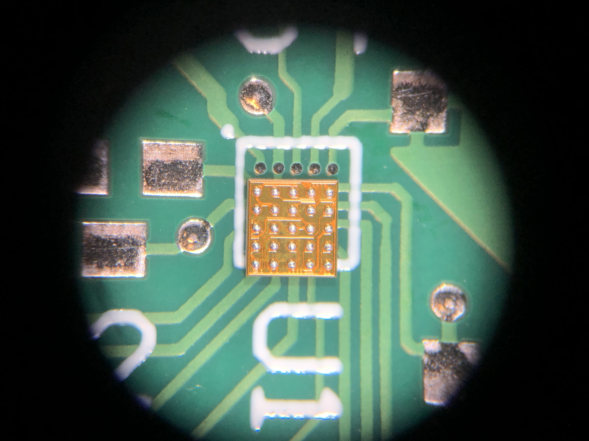
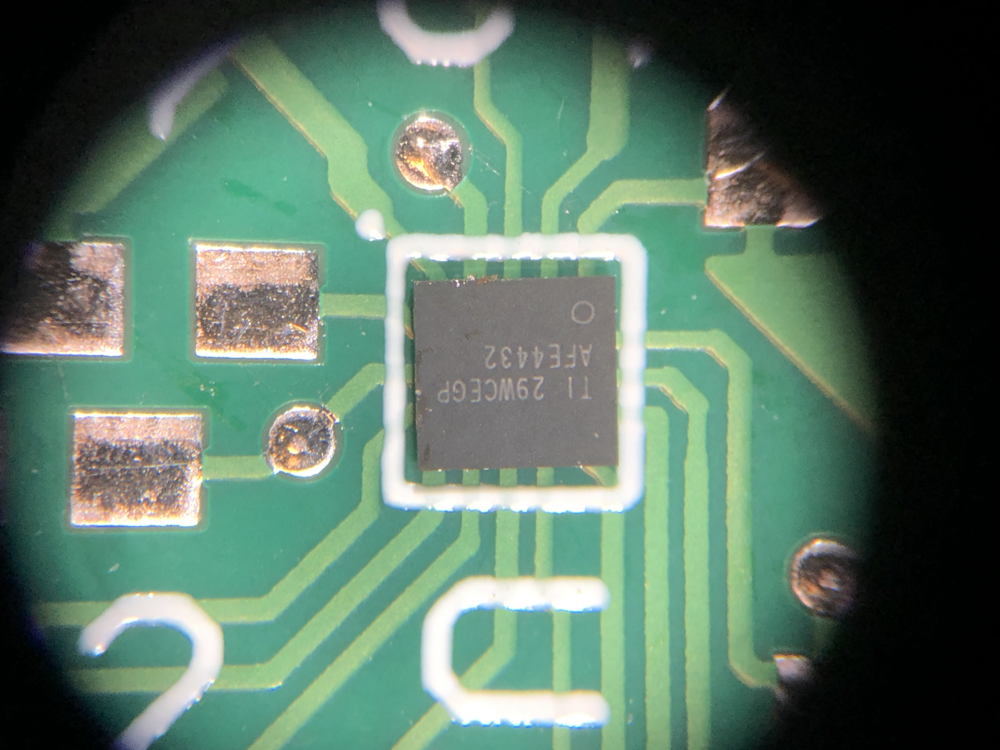

Modified on: =this.file.mtime
Introduction
Background
A ball grid array (BGA) package is a type of package that leverages a grid array of solder balls on the bottom of your IC package to make a connection to the PCB. The PCB footprint would look like a grid of exposed pads, and the device IC will have solder balls placed along the underside of the device.
When reflowed, the solder balls will melt and collapse into the pad below.
BGA technology is primarily used for high density devices. Often this is microcontrollers or processors that have many pics, but the technology can also be used for low-pin count devices that want to have the smallest PCB footprint possible.
Motivations
I first had a need for using BGA packages when I started making small wearables. Specifically, I wanted to use an advanced IC for heart-rate sensing, the AFE4432 from Texas Instruments. I also used the BQ25120A (also from TI) in the project because the additional cost of using another BGA package was minimal.
Requirements
Scope of work
This article will discuss the whole process of implementing BGA technology on your PCB designs, from the design to manufacture to assembly.
Some basic knowledge of common ECAD software such as Altium or KiCAD would be nice, as we will be making footprints in the software. I made many iterations of the footprint in software before I was happy with the final product, so some experience with footprint creation would be nice.
Resources
PCB board
It is very important that you realize manufacture of BGA boards IS NOT CHEAP! I got quotes up to the thousands of dollar range for a production run of only 5 boards.
This price is mainly drive up through the very fine pitches and small features that are required for the PCB footprints. The devices I was designing for had pitches of 0.35mm and 0.40 mm.
I will discuss vendor selection and ordering in more detail in [[#Challenges]].
Tools
As far as tools for final assembly, you will need some high-quality flux and a hot air soldering station.
I used a pretty worn down Hakko, which is still a nice soldering station but not the top of the line by any means.

A pic of the hot air soldering station I purchased off eBay. Only 115 bucks, a steal compared to the 700 retail they charge.
An alternative and equally viable solution is to use a proper reflow oven.
Design
Sketches, Diagrams, or Mockups
Let's first discuss the two major pad types for PCB design. These include SMD (solder-mask defined) and NSMD (non-solder-mask defined). The difference is really in the name, the relationship between the solder mask clearance and the exposed copper pad.
Design Approach
As mentioned above, all the "design" is really done in your ECAD software. Altium is a pretty top-tier development software and the capabilities show.
Implementation / Building
Process
I really had to do a lot of reading to get this project going. I'm very unfamiliar with regular footprint layout, much less fine-pitch BGA layout.
To make matters worse, this is a fairly niche topic at the small levels of detail I was dealing with. So not many easily accessible online resources. And the resources I found had conflicting opinions!
Challenges
After I got my design finalized, the hardest hurdle was finding a suitable vendor for the PCB board manufacture.
I got some recommendations from coworkers at my company for a local company to use. They had excellent customer service, got on a design call with me to understand my requirements, and were very responsive. There was only a couple issues with them, the main one being I only wanted 5 boards (their minimum quantity). No board shop with that level of design support and customer support really wants to support a production run of only 5 boards.
The eventual quote I got from them (and several other U.S. board shops was over a thousand dollars). No bueno for a personal project, no matter how motivated I was on it.
I eventually went back to my roots with PCBWay (not a sponsor haha!). I ordered from them in college, but didn't think their manufacturing capabilities were up to snuff with what I was looking for. However, I checked their "Advanced Capabilties" section and thought that their copper to copper clearances might be able to work with me.
The engineers had some questions and we want back and forth for a little bit, but eventually we agreed and I got it manufactured!

A nice microscope shot I took of the underside of the AFE4432 on top of the PCB location
Wins
The actual soldering part of these chips went way better than anything I could have hoped for. I did hand-assembly of 5 boards over the course of many months, and the BGA chips were by far the chips I had the least problems with. Various QFN packages had many more botched solder jobs with either shorts or discontinuity.
My main advice for this includes
- a liberal usage of flux
- this keeps the chip from flying away when you blow the hot air, as many of these are tiny
- keeping your air pressure low helps with this too
- soldering until you see the package "snap" into place plus 10 seconds
But yeah overall whenever I had to replace one of the BGA packages I was much more enthusiastic to perform the rework compared to pretty much every other IC in the design.
Conclusion
Status and Results
400 dollars later for a small 45 mm x 45 mm PCB, and we had the prototypes in hand.

top of the AFE4432, ignore the incorrect A1 position location :)
Reflection
In hindsight for a hobbyist level project I don't know of these packages are worth the extra design complexity and cost. If I didn't have these packages on my board, for such a small board I could have made 5 for about 20 bucks. This would have made uprevving my design to fix first round mistakes so much easier. Instead, I was stuck with my initial design for many months as I paid so much for the samples.
For v2 of the project in question I designed these for (sorry, top secret for now!) I actually switched over to simpler footprints. This makes parts cheaper, layout easier, and only costs me a slight increase in part footprints on my board.
Looking forward
As PCB manufacturing technology improves, I can see the cost for producing these coming way down. I'm sure the same principles of any industry cost relationship will apply, and as they become more popular as a package type economies of scale will bring the cost down.
Even though I will steer away from using them when I can, I realize I will encounter them again. And I'll be prepared